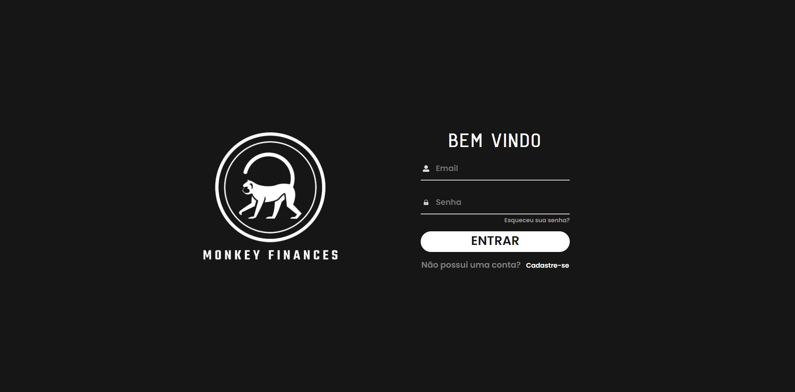

Desenvolvimento de um sistema de gerenciamento de projetos do LACIA (Laboratório avançado de computação e inteligência artificial) de recomendação da disciplina Laboratório de Engenharia de Software ministrada pelo professor Fábio Gomes Rocha na Universidade Tiradentes - UNIT.
Ir até o Projeto
Olá, eu sou
Francisco José
Um jovem que ama aprender e apaixonado por programação. Conhecimento na área de desenvolvimento em Websites utilizando hmtl, css e js
Clique para ver meu currículoLacia
4lab
Criação de um aplicativo que irá auxiliar no controle de qualidade de laboratório de an álises clínicas, em questão o laboratório central de biomedicina (4lab) , visando ao biomédico responsável da qualidade um maior controle sob as atividades desenvolvidas.
Ir até o ProjetoMonkey Finances

O sistema de gerenciamento de finanças Monkey Finances surgiu após uma análise mercadológica da equipe de desenvolvimento Monkeys, onde foi verificado que na maioria dos sistemas para gestão financeira, as interfaces e a comunicação com o usuário ficava um tanto quanto restrita à pessoas com um certo conhecimento da área, ou apenas para pessoas com algum nível de escolaridade elevada.
Ir até o Projeto